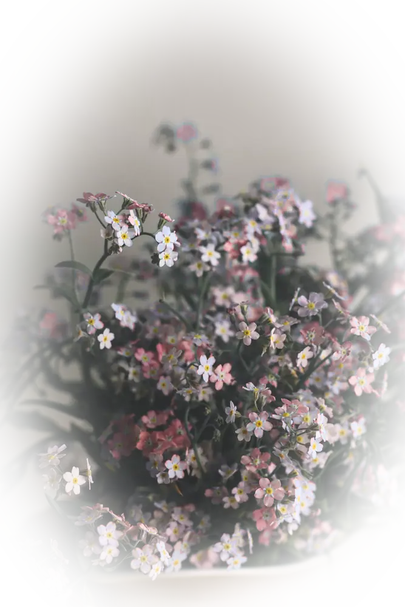
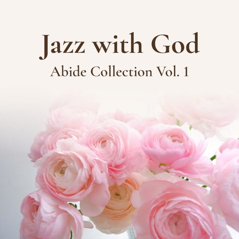

Faith & everyday peace
Bible verses and calm reflections for ordinary days — light without pressure.

Welcome to the little bookstore
Gentle books for quiet hearts
Soft watercolor pages, Scripture, and everyday kindness — a small shelf of books made for faith, calm, and thoughtful gifts.
Soft watercolor art, Bible verses, mindful reflections, and simple joys — written with care for everyday peace.
New on the shelf
A few standouts across faith, calm, gratitude, love, art, and encouragement.
For quiet moments
Gentle reasons people reach for this shelf — no hype, just soft benefits.
Bible verses and calm reflections for ordinary days — light without pressure.
Encouragement for friends, couples, teens, and anyone who needs a kind word.
Watercolour scenes, journals, and colouring — space to breathe and create.
Gifts of encouragement
Browse by mood. Open a book for details and Amazon links.
Loading books…
Listen while you browse
Soft Christian jazz for prayer, rest, and quiet mornings — the same gentle spirit as the books.

Jazz with God · out 24 Oct 2026
Pre-save / ListenJazz with God
Pre-save / ListenBegin each day with God
Short, gentle morning prayers on YouTube — Scripture, peace and hope to start your day.
Latest prayers
Choose a book that meets you where you are — faith, gratitude, love, colouring, or quiet encouragement.